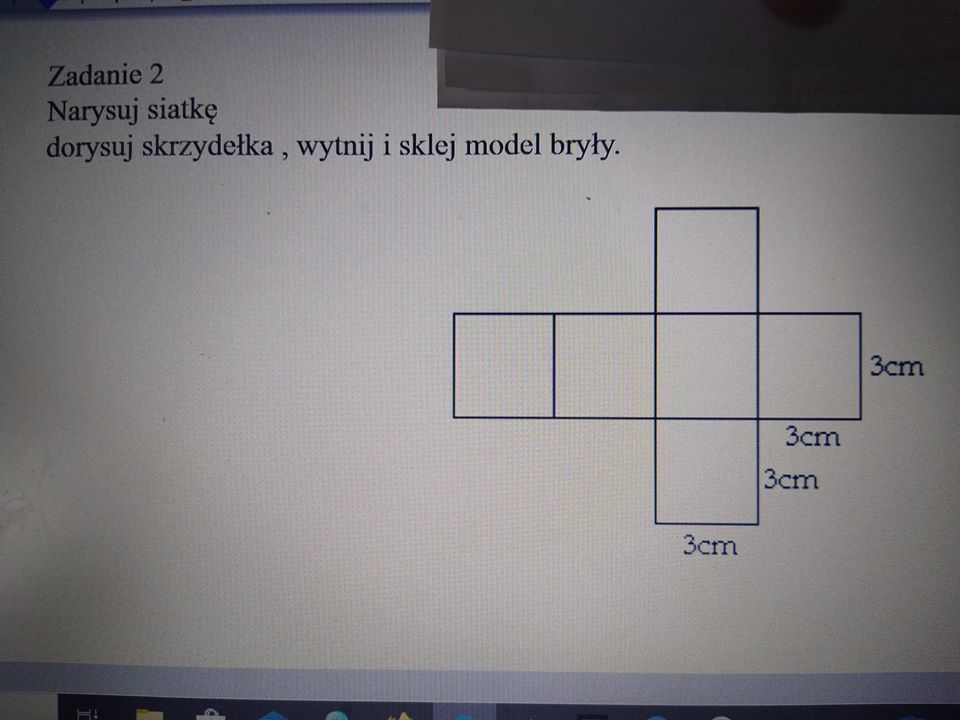

Nauczanie zdalne
Klasa 7Ba
wychowawca El¿bieta Jaskólska
Pi?tek 03.04.2020r
informatyka
religa
w-f
edukacja dla bezpieczeñstwa
1. Informatyka – Pan Grzegorz Gos
Temat: Formu?y w excelu
Obejrzyj film
https://www.youtube.com/watch?v=SU8SryGqOgs
Naucz siê formu? "suma" i "?rednia"
Zapisz plik i nazwij go wed?ug wzoru imiê.klasa np. Kacper.7
Je¿eli mo¿esz wy?lij mi zadanie na adres grzesiekgos@interia.pl
2. Religa – Pani Lidia ¯o?dak - Wo?na
Religia
Temat: Niedziela Palmowa.
Wys?uchaj opowiadania ze strony:
https://www.youtube.com/watch?v=IJLaQ7vfeS4 i dokoñcz ( w zeszycie) odpowied? na pytanie:
Po co nam palma w niedzielê Palmow? ?
Palma oznacza wiarê w ............
Dla chêtnych: mo¿esz u?o¿y? puzzle on line:
https://puzzlefactory.pl/pl/puzzle/graj/dla-dzieci/174049-niedziela-palmowa
Pamiêtamy o codziennej modlitwie .
3. Wychowanie fizyczne – Iwona Achmirowicz
Temat: Zabawy i ?wiczenia interaktywne
Polecenie do wykonania: Skopiuj za??czony link do strony internetowej „WORDWALL” , na której znajdziesz ?wietn? zabawê interaktywn?. Zabawa jest bardzo prosta. Wystarczy zakrêci? ko?em klikaj?c myszk? w pole „ZAKRÊ?”. Kiedy ko?o siê zatrzyma wska¿e ci ?wiczenie, które musisz wykona?. Zapro? do zabawy rodzeñstwo lub rodziców. Pamiêtaj ¿e przed rozpoczêciem zabawy trzeba wykona? krótk? rozgrzewkê.
Rozgrzewka:
1. Stañ w lekkim rozkroku. Wykonaj kilka razy kr?¿enia biodrami.
2. Z??cz nogi. Chwy? siê za kolana i wykonaj kilka kó?ek kolanami
3. Stañ na prawej nodze, unie? rêce w bok- policz do piêciu i zmiana nogi.
4. Wykonaj 15 podskoków w miejscu.
Czwartek 02.04.2020r
j.angielski
geografia/przyroda
technika
matematyka
J.angielski Pan £ukasz Tyczka
Uzupe?niamy nasz? listê zawodów o kolejne - W zeszycie pod tematem dopisujemy do listy kolejne zawody w jêzyku polskim i angielskim. Zazwyczaj wykonujemy rysunek do ka¿dego s?owa, maj?cy na celu lepsze zapamiêtanie – je¿eli uczniowie wyra¿? chê? wykonania takiego rysunku, to jest to jak najbardziej wskazane, je¿eli jednak nie bêd? w stanie, wtedy niech ogranicz? siê tylko do pisania.
Pod list? podam link do krótkiego filmu, który pozwoli zapozna? siê z wymow? zawodów zawartych na li?cie.
Lesson
Topic: Ró¿ne zwody – different kinds of jobs –kontynuacja tematu.
Electrician – elektryk
Photographer – fotograf
Clown – klaun
Plumber – hydraulik
Musician – muzyk
Scientist – naukowiec
Referee – sêdzia (sportowy)
Taxi driver – taksówkarz
Businessman – biznesmen (przedsiêbiorca)
Dentist – dentysta
Po sporz?dzeniu notatki w zeszycie w??czmy nasz filmik od czasu 2:00, czyli od s?ówka electrician:
https://www.youtube.com/watch?v=DGc7V9VJF8c
Je¿eli uczniowie dadz? radê, proszê w ramach utrwalenia w??czy? film jeszcze raz, od pocz?tku, aby przypomnie? i utrwali? s?ówka z zesz?ego tygodnia i dzisiejsze, czyli zakres czasowy na filmie od 0:00 do 3:34
2. Geografia Pani Bo¿ena Lisowska
Temat: Turystyka. Regiony turystyczne Polski.
Przepisz notatkê do zeszytu:
Turystyka obejmuje ró¿ne formy spêdzania czasu wolnego poza domem. W zale¿no?ci od wyjazdu turystykê dzielimy na:
- wypoczynkow?
- religijn?
- biznesow?
- poznawcz?
- lecznicz?
Walory turystyczne Polski:
a)Przyrodnicze ( to m.in. urozmaicona rze?ba terenu, jeziora, rzeki)
Obejrzyj film:
https://www.youtube.com/watch?v=ZLR0B6O6cmc
b)Kulturowe ( liczne zabytki, muzea )
Na li?cie UNESCO jest obecnie 15 polskich zabytków m.in. Stare Miasto w Krakowie, Królewskie Kopalnie Soli w Wieliczce i Bochni, Zamek krzy¿acki w Malborku
Obejrzyj film:
https://www.youtube.com/watch?v=GEHHW6JoRM4
c) Ciekawe miejsca
https://www.youtube.com/watch?v=I3w9m4mGk2Y
Napisz, co ciekawego jest w regionie, w którym mieszkasz?
3. Technika – Marek Góralczyk
https://www.youtube.com/watch?v=ETfv7Ml15x0
Obejrzyj pierwsze 2 minuty i 40 sekund filmu, zapamiêtaj te w?a?ciwo?ci metali. przydadz? siê nam na zajêciach praktycznych
4. Matematyka – El¿bieta Jaskólska
lekcja 105 02.04.2020r.
Temat: Sze?cian i prostopad?o?cian. Pole sze?cianu.
Mo¿esz obejrze? film o sze?cianie na you tube : Budowa prostopad?o?cianu i sze?cianu #2 [ Figury przestrzenne - wprowadzenie ]
Poni¿sz? notatkê przepisz lub wklej do zeszytu
Definicja sze?cianu:
Sze?cian to prostopad?o?cian zbudowany z 6 jednakowych kwadratów.
Pole powierzchni ca?kowitej sze?cianu obliczamy ze wzoru:
Pc=6·a2
Sze?cian sk?ada siê z 6 jednakowych kwadratów st?d otrzymali?my powy¿szy wzór.
Przyk?ad 1
Oblicz pole sze?cianu o boku d?ugo?ci a = 3 cm.
Gdy znamy d?ugo?? boku sze?cianu to wystarczy, ¿e podstawimy do wzoru:
Pc=6·a2 = 6· (3cm·3cm) =6·9cm2=54cm2
Pole sze?cianu wynosi 54 cm2.
Zadanie 1
Uzupe?nij luki w zadaniach.
Sze?cian sk?ada siê z........?cian.
Sze?cian ma.........wierzcho?ków.
Sze?cian ma ......... krawêdzi.
Zadanie 2
Oblicz pole sze?cianu o boku d?ugo?ci a = 3,5 cm.
(Mo¿esz u¿y? kalkulatora, ale najpierw spróbuj obliczy? stosuj?c mno¿enie sposobem pisemnym)
?roda 01.04.2020r
chemia
muzyka
WOS
j.polski
JÊZYK POLSKI
Temat: K. Wierzyñski o rado?ci ¿ycia- wiersz „Na ??ce”
Przeczytaj podany wiersz:
Le¿ê na ??ce,
Nikogo nie ma : ja i s?oñce
Wiatr ci?gnie po trawach z szelestem,
A u góry
Siostry moje, bia?e chmury,
Wêdruj? na wschód.
Uzupe?nij zdania z podanymi wyrazami i przepisz tekst do zeszytu.
ciep?o, trawa, lodu, ?niegu, krokusy, bociany, bazie, s?oñce
Jest ju¿ wiosna. Na dworze jest ................... ?wieci .................. Nie ma ju¿ ..............
i ...................Na ??ce ro?nie zielona ................. Nad ??k? lataj? ................. Na wierzbie
s? .....................W ogródku kwitn? ...................
CHEMIA
Temat: Stê¿enie procentowe roztworu
Zapisz w zeszycie definicjê
Stê¿enie procentowe roztworu (cp)– to liczba gramów substancji rozpuszczonej w 100 g roztworu.
gdzie ms-masa substancji rozpuszczonej
mr-masa roztworu (ZDJÊCIE WZORU PONI¯EJ)

Wodny roztwór soli kuchennej jest7%to znaczy, ¿e w 100 g roztworu znajduje siê 7 g soli kuchennej.
Zadanie 1.
Oblicz jakie bêdzie stê¿enie procentowe roztworu je¿eli ms=25 g a mr-ru=100 g. Podstaw do wzoru i
oblicz.
MUZYKA
Temat : Poezja ?piewana w piosence pt.,, Piosenka wiosenna”.
1. Pos?uchaj piosenki i zastanów siê o czym opowiada piosenka , na jakim instrumencie
grany jest akompaniament do piosenki.
2. Prezentacja piosenki
https://www.youtube.com/watch?v=gxCHicuPmQA
,, Piosenka wiosenna''
I Zagram dla Ciebie na ka¿dej gitarze ?wiata,
na ulic fletach, na nitkach babiego lata.
Wy?piewam, jak potrafiê, ksiê¿yce na rozstajach
i wrze?nie, i stycznie, i maje,
i zagubione d?wiêki, i barwy na p?ótnach Vlamincka,
i s?oñce wêdruj?ce promienia ?cie¿ynk?.
Ref. Graj nam graj, pie?ñ skrzydlata,
wiosna taniec nasz niesie po ??kach,
zatañczymy siê w sobie do lata,
zatañczymy siê w siebie bez koñca.
3. Za?piewaj z rodzicami I zwrotkê i refren piosenki.
4. Napisz w zeszycie temat lekcji ,notatkê i narysuj instrument na którym grany jest
akompaniament do piosenki.
5. Notatka;
Maurice de Vlaminck ( czytaj: Moris de Wlamêk), 1876-1958- malarz francuski, jego obrazy
charakteryzuj? siê ?mia?ymi, intensywnymi kolorami
Wtorek 31.03.2020r
matematyka
fizyka
plastyka
Plastyka kl. 7Ba
Temat: Tworzenie z natury.
Martwa natura – gatunek malarski obejmuj?cy kompozycje, zwykle malarskie lub rysunkowe, sk?adaj?ce siê ze stosunkowo niewielkich, nieruchomych, najczê?ciej nieo¿ywionych przedmiotów.
Pospolitymi elementami martwych natur s? owoce, kwiaty, ksi?¿ki, naczynia, broñ, przyrz?dy my?liwskie, przybory kuchenne, przybory do palenia tytoniu, ?wiece, karty i inne gry, instrumenty muzyczne itp.
1. Proszê wej?? na stronê internetow? klikaj?c w poni¿szy link:
https://nowasp.ebooki.nowaera.pl/viewer/page/Plastyka/kl7/books/605/4/605-v4_epub/OEBPS/Text/Index.html?title=UGxhc3R5a2EgRG8gZHppZcWCYSEga2wuIDc=
2. Proszê przej?? na stronê 68 podrêcznika do plastyki i zapozna? siê z tematem „Martwa natura”.
Na str. 71 pokazana jest przyk?adowa martwa natura.
3. Z przedmiotów dostêpnych w domu u?ó¿ prost? martw? naturê np. dzbanek, fili¿anka, spodek z ciasteczkiem, lub dowoln? inn? kompozycjê.
4. Narysuj kredkami lub pastelami u?o¿on? martw? naturê na kartce formatu A4.
5. Gotowy obrazek sfotografuj i prze?lij na adres: jakrzemian@gmail.com
3. Fizyka – Pani Beata Zuba
Temat : Si?y w przyrodzie. Si?a oporu powietrza.
zapisz do zeszytu:
Powietrze, które nas otacza, powoduje opór dla cia?, które spadaj? i które siê w nim poruszaj?. Im
wiêksza jest prêdko?? cia?a tym wiêkszy jest opór powietrza. Opór powietrza zale¿y tak¿e od kszta?tu
cia?a.
zad
Obejrzyj film
https://www.youtube.com/watch?v=axGnQ0D6ycs
Wykonaj do?wiadczenie z filmiku z wykorzystaniem d?oni i wody.
Zastanów siê czy opór w wodzie wystêpuje tak samo jak w powietrzu?
MATEMATYKA
PROSZÊ SPOJRZE? NA ZDJECIA W ZA£ACZNIKU
Wpisz na wyszukiwarce: youtube Siatki prostopad?o?cianów - Matematyka Szko?a Podstawowa.
Obejrzyj film. Wykonaj w zeszycie poni¿sze zadania.


Poniedzia?ek 30.03.2020r
jêzyk polski
historia
biologia
JÊZYK POLSKI
Temat: Charakterystyka bohaterów lektury „Latarnik”
Przepisz do zeszytu charakterystykê bohaterów.
Skawiñski – g?ówny bohater utworu, mê¿czyzna siedemdziesiêcioletni, obj?? posadê latarnika w
Aspinwall. Pragn?? odpoczynku, spokoju. Jego ¿ycie by?o bardzo burzliwe. Bra? udzia? w ró¿nych
powstaniach i wojnach. Lubi? swoj? pracê, sumiennie wykonywa? obowi?zki latarnika. Kontakt z natur?
sprawia?, ¿e czu? siê szczê?liwy. Johns – stra¿nik portowy, przynosi Skawiñskiemu wiadomo?? o
zatoniêciu ?odzi i utracie posady. Mr Izaak- konsul Stanów Zjednoczonych w Panamie, przyjmuje do
pracy Skawiñskiego.
HISTORIA
Temat: Odzyskanie niepodleg?o?ci przez Polskê.
Zapisz w zeszycie du¿ymi literami i na kolorowo. Zapamiêtaj tê datê.
11 listopada 1918 roku Polska odzyska?a niepodleg?o??.
Narodowe ?wiêto Niepodleg?o?ci to najwa¿niejsze polskie ?wiêto narodowe. Przez 123 lata niewoli zaborczej
Polacy próbowali na przeró¿ne sposoby odzyska? niepodleg?o?? i czekali latami na dogodny moment a¿
w 1918 r.marsza?ek Pi?sudski poinformowa? o powstaniu niepodleg?ego pañstwa polskiego.
Obejrzyj film:
https://www.youtube.com/watch?v=Z4GdAYXfTGA
BIOLOGIA
Podrêcznik z biologii Puls ¯ycia kl. 7 dostêpny na stronie -
https://www.nowaera.pl/naukazdalna
Temat
:Higiena i choroby uk?adu wydalniczego.
Podrêcznik str. 157 - przeczyta? tekst.
Wykonaj zadania w zeszycie :
zad 1. Wypisz jak nale¿y dba? o uk?ad wydalniczy aby zapobiega? chorob? tego uk?adu.
(str. 157)
zad. 2 Wymieñ znane ci choroby uk?adu wydalniczego.
............................................................................
( Zapoznaj siê z ich przyczynami, objawami i sposobem leczenia - str. 158-159)
Archiwum
25-27.03